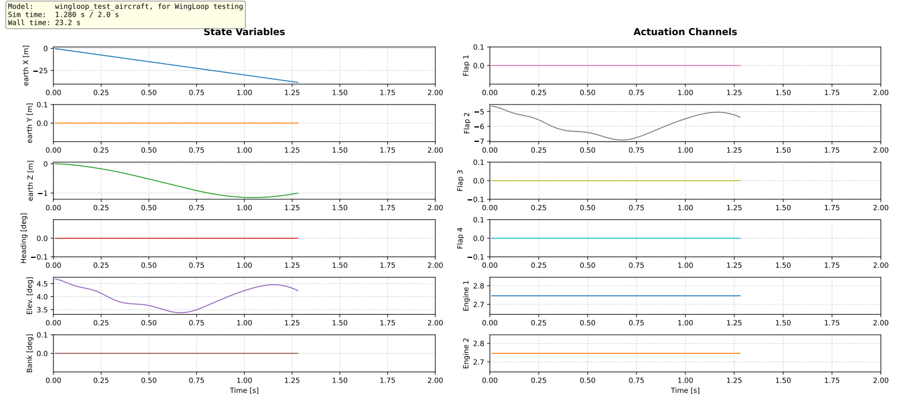
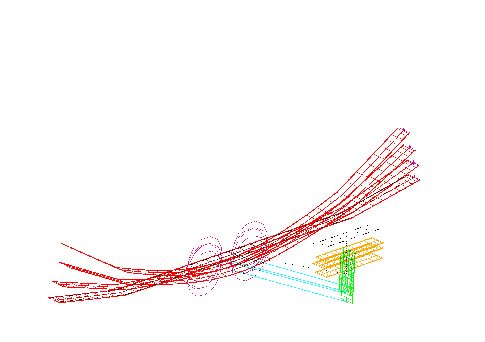

WingLoop — Closed-Loop Control Framework for ASWING
A Python-based library that extends ASWING with arbitrary closed-loop control laws — enabling nonlinear, multi-backend flight dynamics simulation for flexible aircraft.
WingLoop — a closed-loop control framework built on top of ASWING, extending its simulation capabilities for flexible aircraft research.
The Problem WingLoop Solves
ASWING is a powerful nonlinear aeroelastic tool for flexible aircraft — capable of trim, time-domain transient simulation, and frequency-domain analysis. However, its native controller support is limited to linear, bi-scheduled control laws defined entirely within ASWING's own format. For research into flexible aircraft dynamics and control — where nonlinear, adaptive, or otherwise arbitrary control strategies are often exactly what needs to be tested — this is a significant constraint.
WingLoop lifts that constraint entirely. It integrates ASWING with Python — and optionally MATLAB or Simulink — via a time-marching closed-loop interface. At each timestep, the current aircraft state is passed out of ASWING to the chosen controller backend, the control law is evaluated, and the resulting inputs are fed back into ASWING for the next step. The result is a general-purpose simulation framework where the controller can be as simple as a PID or as complex as a nonlinear observer-based law — with no changes required to ASWING itself.
Supported Controller Backends
WingLoop supports three controller integration modes, selectable at runtime:
- Python — native Python control laws; the lightest and fastest option, with computational overhead close to ASWING running standalone
- MATLAB — control laws implemented in MATLAB, called via MATLAB's Python API; moderate overhead, useful when existing MATLAB toolboxes are needed
- Simulink — Simulink block diagram controllers, either run live or exported as compiled FMUs; FMU compilation adds one-off overhead but brings runtime performance close to Python
For most research use cases, Python or Simulink FMU are the recommended choices — they offer the best balance of flexibility and speed.
Reference Publication
WingLoop was presented at the AIAA AVIATION FORUM AND ASCEND 2025:
Leonardo Avoni, Murat Bronz, Jean-Philippe Condomines and Jean-Marc Moschetta. "Enhancing ASWING Flight Dynamics Simulations with Closed-Loop Control for Flexible Aircraft," AIAA 2025-3425. July 2025. https://arc.aiaa.org/doi/10.2514/6.2025-3425
Simulation Outputs: What WingLoop Makes Easy
Beyond the control loop itself, WingLoop includes utilities for post-processing and visualization of ASWING outputs — things that would otherwise require significant manual work. This includes automated video generation of the aircraft flight, stroboscopic views of structural deformation over time, and real-time plotting of state variables during simulation runs. The examples below were generated from a test case involving a simplified flexible aircraft responding to a 1-cosine vertical gust, with a PID controller applied to stabilize the response.

The WingLoop GUI during a live simulation run — real-time time plots of aircraft states and control inputs across the closed-loop timesteps.

Animated video output of the flexible aircraft simulation — structural deformation and flight dynamics visualized over time.

Stroboscopic view — multiple flight states overlaid to highlight structural deformation amplitude and mode shapes across the simulation.
License & Citation
WingLoop is released under CC BY-NC-SA 4.0 — free for non-commercial use with attribution. Commercial use requires a separate agreement; contact details are on the GitHub page. If you use WingLoop in academic work, please cite the AIAA 2025-3425 paper above.